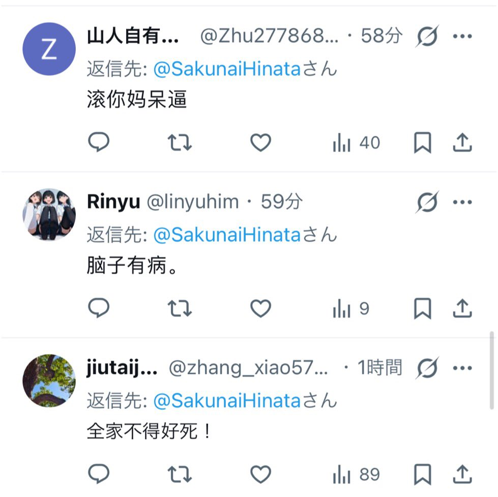
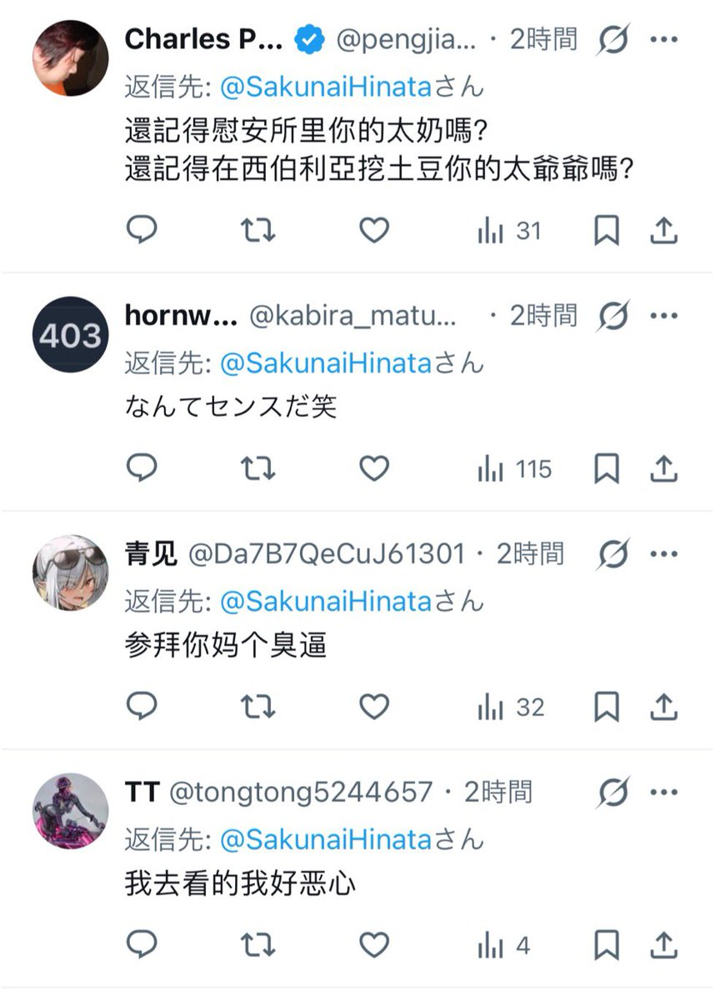
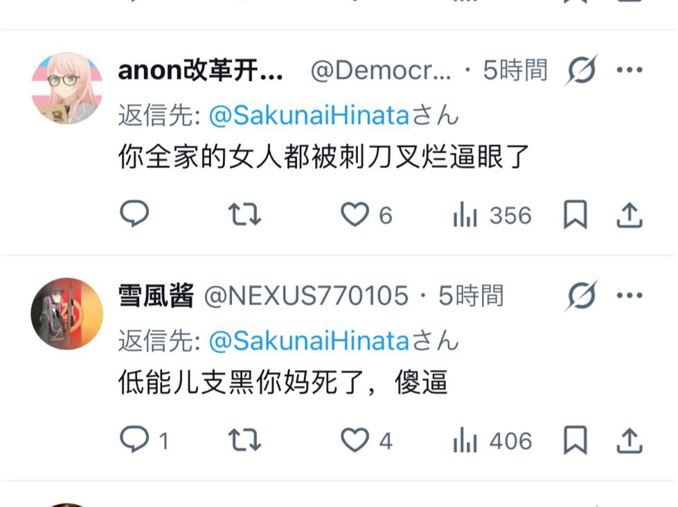
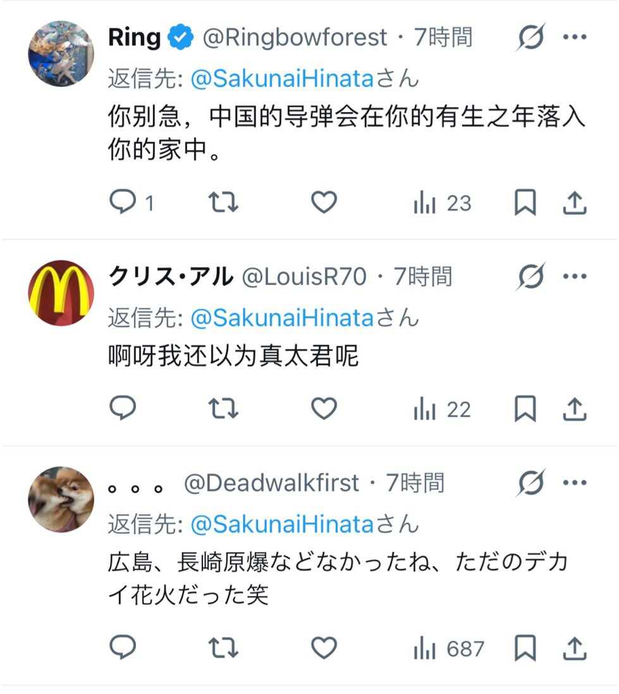

青石巷🍃🕊️
@qingshixiang258
@SakunaiHinata 味大




咲内ひなた
@SakunaiHinata
今日南京刺身を揶揄したり靖国神社参拝したら、大勢の反日中国人から壮絶な罵詈雑言に晒されてしまった草
南京大虐殺は捏造だったが、反中の支黒界隈ではもう既に中国揶揄する為のミーム化され、「日台友好関連」に次ぐ中国人を発狂しうるタブーになった
南京事件のことを「南京刺身」で呼ぼう https://t.co/XiZCSDrVsM https://t.co/DA0waD0lZc